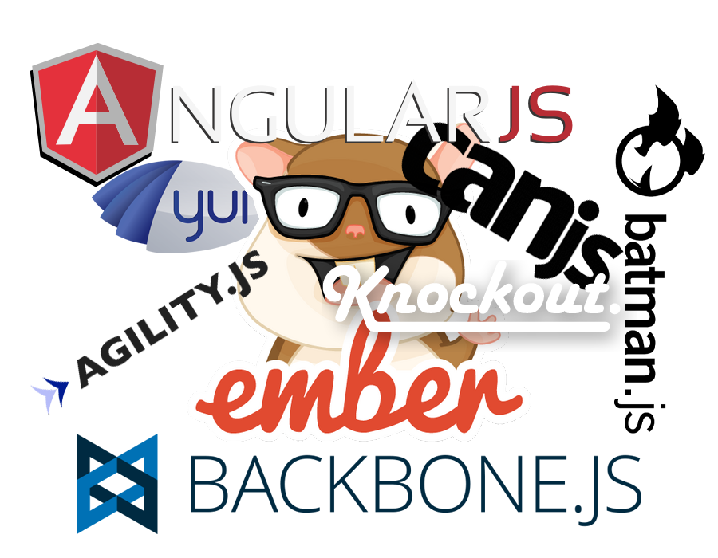

TroopJS
scalable web application
EF Labs (Shanghai)
englishtown.com
The Troop
what we miss here

is not another featured library
but...
framework that scales
library is...
Attractive by doing one thing well,
can't stop from grabbing you after then
framework is...
Does for you a few important things,
then stays out of your way
scalability is about...
not just more functionalities
also...
various requirements
diverse libraries
multiple devices
different developers
To be scalable
the framework have to...
NOT dictate!
set your baseline
prescribe less
return more options to developer
views
models
observables
bindings
templates
routers
controllers
To be scalable
you have to...
Unlearn -> Relearn
rid the ways that hold you back!
views
models
observables
bindings
templates
routers
controllers
a minimalist perspective
modularity
declarative
decoupled
open-ended
you can reduce all constructs to be just...
components
break down to
the minimal reusables
build up to
the maximum deliverable
TroopJS component
is standards compliant built upon...
AMD - requireJS
Promise - when
ES5 - poly
TroopJS component
AMD module that export constructor
properties for describing behaviour
loosely coupled
extendable & mixable
has a life-cycle, registered and managed
a "ticker" component
Component.extend(function(element, name, options) {
this.tick = element.data('start') || options.start;
this.inc = 1;
}, {
"sig/start": function() {
this.interval = setInterval(this.ticking.bind(this), 1000);
},
"sig/render": function() {
this.html('Elapsed: ' + this.tick + '');
},
"hub/flip": function() {
this.inc = -this.inc;
},
"sig/stop": function() {
clearInterval(this.interval);
},
"ticking": function() {
this.tick += this.inc;
this.signal('render');
}
});
specials
proactive method called by the framework
DOES NOT appears as regular object properties
distinguished from property name
<special>[/<type>](arguments...)
more specials...
-
on/foo: handle a regular event "foo" emitted
- sig/start : how the component start it's life-cycle
-
hub/foo/bar : subscribe to the hub topic "foo/bar"
-
dom/click('input[type="submit"]') : handle form submit event
- route/change/blog/:id?/:search?/(page/:page)?` : listen for uri change of the specified pattern
-
anything/else/...
when the same special appears on the hierarchy of a component, sequential calls will guarantee the extended specials are always called ahead of super ones
var Parent = Component.extend({
"sig/start": function(){
console.log("super");
}});
Parent.create({
"sig/start": function(){
console.log("me");
}}).signal("start");
// "me", "super"
what? all specials under the hood
are actually...
events
the heart of powering
all component's reactive methods
Component.extend({
"sig/render": function() {
this.html('Elapsed: ' + this.tick + '');
},
"hub/flip": function() {
this.inc = -this.inc;
}
}); is the same as doing...
Component.extend({
"sig/start": function() {
this.on("sig/render", function onRender() {
this.html('Elapsed: ' + this.tick + '');
});
this.on("hub/flip", function onFlip() {
this.inc = -this.inc;
});
}
});
TroopJS event is notably...
asynchronous
&
mutable
in clothes of Node's event emitter
a "login" component
return a promise in handler will block the emitting, and
value that resolves the promise will return to emit
Component.extend({
"sig/start": function() {
return this.emit("login", "troopjs", "******")
.spread(function(login_time) {
console.log("user logged in:", login_time);
});
},
"on/login": function onLogin(username, password) {
return $.ajax({
url: "/auth",
data: {user: username, passwd: password}
}).done(function() {
return +Date.now();
});
}
});
handlers++
do they run in parallel or in sequence?
do they receive same arguments or muted ones?
what's the return value for the emit?
which handlers are to be called?
it depends...
event runner
it's up to you to decide...
how/which event handlers are called with what
how/which event handlers are called with what
runner for each event type
-
signal - use async sequential runner
- dom event - use sync sequential runner
- hub event - use async pipelined runner
this.emit({
type: 'login',
runner: function runHandlers(event, handlers, args) {
var CALLBACK = "callback", CONTEXT = "context";
var results = [], resultsCount = 0, count = 0;
var next = function(result, skip) {
var candidate;
// Store result if no skip
if (skip !== true) {
results[resultsCount++] = result;
}
// 1. run handlers one after the other;
// 2. pass each handler the original argument;
// 3. call each handler in scope of "context" property;
// 4. collect all return values from handlers;
return (candidate = handlers[count++])
? when(candidate[CALLBACK].apply(candidate[CONTEXT], args), next)
: when.resolve(results);
};
return next(args, true);
}
});
hub/...
"asynchronous event bus"
- simply events fired on a singleton emitter
- create delegation methods on each component
- pub/sub model for cross-components communication
hub subscribers are running with the pipeline runner
prior one may block and influence the next
think of the UNIX pipe
// from one component
one.publish("log", "info", "some message").spread(function (type, msg) {
// type and message are echo here.
});
// Adding timestamp.
another.subscribe("log", function (type, msg) {
return [type, msg, Date.now()];
});
// Print the log message.
someother.subscribe("log", function (type, msg, timestamp) {
console[type](msg + ' at ' + Date(timestamp));
});Component.extend({
"displayName": "login-component",
"hub/login": function onLogin(username, password) {
return $.ajax({
url: "/auth",
data: {user: username, passwd: password}
}).done(function() {
return +Date.now();
});
}
});
Component.extend({
"displayName": "user-component",
"sig/start": function onLogin() {
return this.publish("login", "troopjs", "******")
.spread(function(login_time) {
console.log("user logged in:", login_time);
});
}
});
composition
extend component with
constructors/spec/components
var Foo = Factory(function Constructor() {
// constructing
}, {
"something": function () {
// regular method
},
"something(special)": function () {
// a special method
}
});
var Bar = Foo.extend({
"something(special)": function(){
// override parent special
},
"some/other/special": function () {
// a special method too
}
});
// instantiation
Bar();
new Bar();
Bar.create();
prototypal
prototypal inheritance, hierarchical prototype chain
function inherit(Parent, Child) {
var proto;
if(Object.create){
proto = Object.create(Parent.prototype);
}
else {
var Surrogate = function(){};
Surrogate.prototype = Parent.prototype;
proto = new Surrogate;
}
Child.prototype = proto;
}
compose
object composition, flattened/merged properties
function compose(Parent, Child) {
var proto = {};
Object.getOwnPropertyNames(Parent.prototype).forEach(function (prop) {
proto[prop] = Parent.prototype[prop];
});
Child.prototype = proto;
}
pros
a bit more performant
a bit more secure
a bit more interoperable
bring component to DOM as
widget
declaratively, coincident of
describe behaviour of element
<ul data-weave="app/widget/dropdown">
<li>troopjs<li>
<li>backbone<li>
<li>angular<li>
</ul>
alter behaviour with least cost
<ul data-weave="app/widget/sidenav">
<li>troopjs<li>
<li>backbone<li>
<li>angular<li>
</ul>
mix-in widgets
separation of concerns
multiple widgets coordinate on same element
<form class="contact"
data-weave="app/widget/form/contact, app/validation/form">
<fieldset>
<input name="name" placeholder="fullname name"/>
<input data-weave="app/validation/phonenumber" name="phone" placeholder="mobile number"/>
</fieldset>
...
</form>widget properties
passing properties
<ul class="choices" data-weave="app/widget/navigation('horizontal')">
...
</ul>
to receive properties in widget
Widget.extend(function($element, name, direction){
if(direction === "horizontal")
$element.style("float", "left");
});
weave
instantiate and attach widgets to element
- instantiate all declared widgets in "data-weave"
-
load widget modules
- instantiate and start widgets on DOM element
-
removed from "data-weave" and to add "data-woven"
unweave
detach widgets from DOM
- look for "data-unweave"
- stop the specified weaved widgets
- restore "data-weave" and to remove "data-woven"
woven
<ul class="choices" data-weave="app/widget/navigation">...</ul>weave.call($('.foo'));
// OR
$('.foo').weave();<ul class="choices" data-weave="" data-woven="app/widget/navigation@1">...</ul>
unwoven
unweave.call($('.foo'));
// OR
$('.foo').unweave();
<ul class="choices" data-weave="app/widget/navigation" data-woven="">...</ul>widget tracking
$("[data-woven]").woven().then(function(woven){
// iterate over all woven elements.
woven.forEach(function(widgets){
// iterate over the widgets per element.
widgets.forEach(function(widget){
console.log(widget.$element.get(0), require.toUrl(widget.displayName));
});
});
});
on DOM removal
utilize jquery event special
$.event.special.destroy = {
"noBubble": true,
"trigger": function () { return false; },
"remove": function onDestroyRemove(handleObj) {
var me = this;
handleObj.handler.call(me, $.Event(handleObj.type));
}
};
to trigger custom "destory" dom event that cleans up
Widget.extend({
"dom/destroy": function() {
if (this.phase !== "finalize") {
unweave.call(this[$ELEMENT]);
}
}
});packages
-
troopjs-compose
- troopjs-core
- troopjs-dom
-
troopjs-data
-
troopjs-util
-
troopjs-net
-
troopjs-jquery
- troopjs-requirejs
-
troopjs-opt
- troopjs-contrib-*
compatibility
troopjs-core+
node + browser
troopjs-dom
browser (IE6+)
footprint
13k minified + gzipped
feel like part of this troop?
-
website -
http://troopjs.com
- sample - todomvc
- code - https://github.com/troopjs
-
api docs -
http://troopjs.com/api